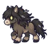
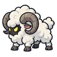
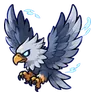
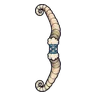
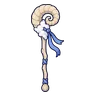
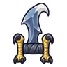
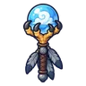

ทุ่งเฮเทอร์ม่วง
ดูบนแผนที่และวิธีไป วางแผนฟาร์ม
ชั้นล่างในที่ราบสูง · Lv 36–50
ชั้นล่าง / ดันเจี้ยน
มอนในแมพ (7)
| มอน | Lv | ธาตุ | โซน |
|---|---|---|---|
| 36–44 | ลม | ||
| 36–48 | ลม | กระท่อมหินหลังคาหญ้า | |
 ม้าแคระทุ่งลม | 36–50 | ลม | กระท่อมหินหลังคาหญ้า |
 แกะเมฆเขาม้วน | 38–50 | ลม | กระท่อมหินหลังคาหญ้า |
| ม้าแคระทุ่งลม · ร่างขนคราม | 38–50 | ลม | |
 อินทรีพายุ | 38–50 | ลม | กระท่อมหินหลังคาหญ้า |
| 56–56 | ลม |
อุปกรณ์ที่ดรอปในแมพนี้
| ของ | โอกาสสูงสุด |
|---|---|
| 0.5% | |
| 0.5% | |
 ธนูเขาแกะเมฆ | 0.25% |
| 0.25% | |
 คทาเขาแกะเมฆ | 0.25% |
 คาทาร์จะงอยอินทรี | 0.25% |
 ออร์บกรงเล็บอินทรี | 0.25% |
| ชุดผึ้งน้อย | 0.15% |
| 0.12% | |
| 0.12% | |
| 0.12% | |
| 0.12% | |
| 0.12% | |
| 0.12% | |
| 0.12% |